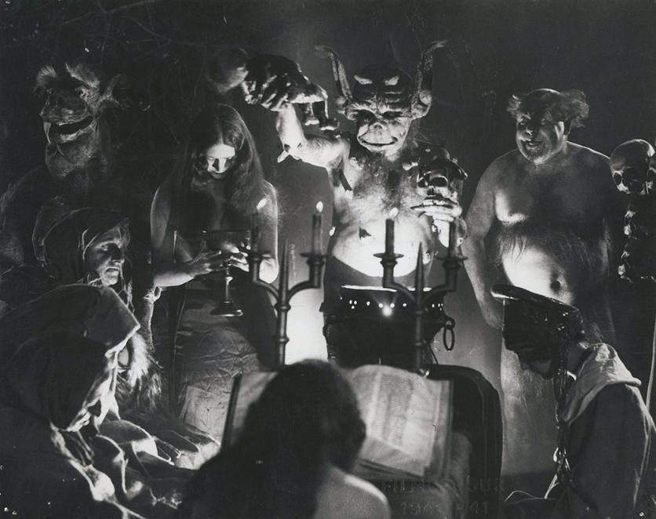
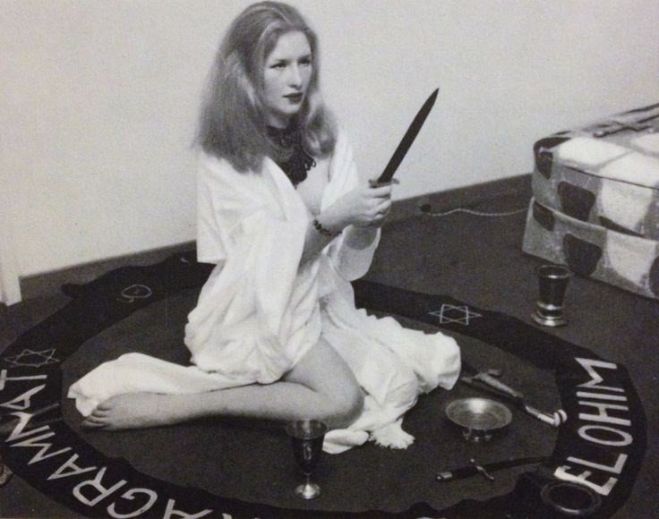
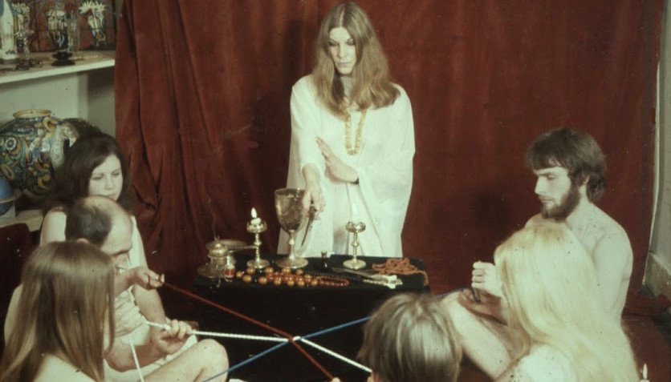
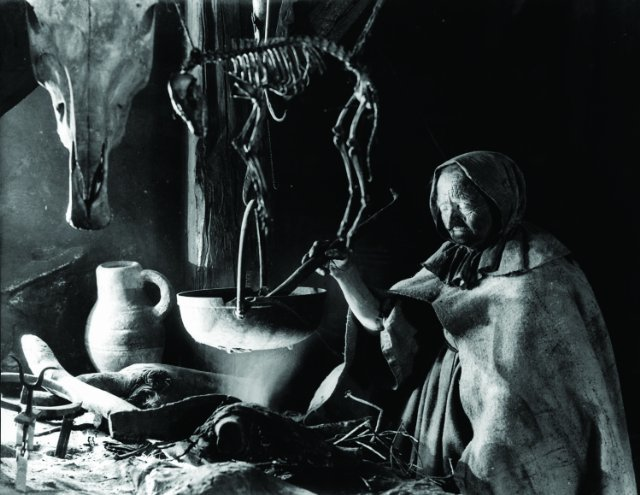
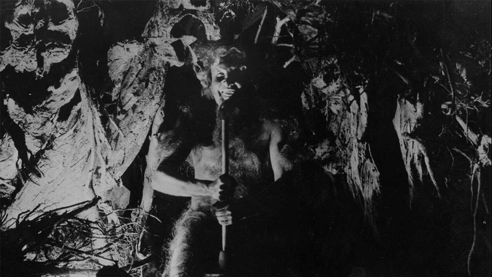

El ocultismo está relacionado con creencias y teorías que defienden la existencia de fenómenos que no posee ninguna explicación racional ni científica, por lo tanto, el ocultismo se dedica a las ciencias ocultas o al estudio de fenómenos para los cuales la ciencia no dio una explicación.
Está relacionado con operaciones que parecen depender más allá de los 5 sentidos, es por ello que se afirma que el ocultismo tiene que ver con la presencia de fuerzas espirituales y, esta práctica tiene como finalidad adivinar el pasado, presente y futuro, así como curar enfermedades.
5 documentales de ocultismo que seguro no conoces
"The occult experience" (1985)
El documental que nos muestra la visión australiana sobre el ocultismo, la brujería y algo que nunca podrá asimilar la televisión norteamericana. Las Wiccas, el Satanismo, los templos dedicados a diferentes prácticas espirituales, el misticismo egipcio, el chamanismo y el aumento de las prácticas ocultas en las sociedades de occidente.
Ver Documental "The Power of the Witch" (1971)
Un documental bastante extraño del terror que vivieron los habitantes del Reino Unido en los años 60 y 70. Con hechos que parecen extraordinarios y referencias grandiosas que hablan sobre el misterio del asesinato Charles Walton en Meon Hill. Muchos creen que Walton fue asesinado como parte de un sacrificio de sangre en un ritual pagano.
Leer Documental "Legend of the Witches" (1970)
Alex Alexanders, el rey Wicca, utilizó este documental como una guía para que el resto de los mortales se aproximara a su vida. Las sanaciones por motivos que nadie descubría, curas de cánce y los retiros espirituales de Sanders se convirtieron en hazañas que marcaron un legado imborrable para el movimiento Wicca.
Leer Documental "Häxan: Witchcraft Through the Ages" (1922)
Un documental que estudia la vida de aquellos inquisidores y problemas de histeria que rodeaban la caza de brujas. Escenas dramatizadas e interrogatorios en las ceremonias del Sabbath y otros ritos demoníacos alrededor de esos territorios que estaban cerca de lo sobrenatural. Un realismo mórbido que trata los casos con actuaciones brillantes y una producción espectacular. Un retrato de magia negra, brujas, hechizos, la Inquisición y miles de casos donde las víctimas sufrían por la ignorancia y las supersticiones de la Edad Media.
Leer Documental "Witchcraft ’70" (1970)
Las culturas de fuera que tenían una manera distinta de ver el mundo fueron satanizadas y parte de los tabúes que tenían las sociedades más "civilizadas". En este documental podrás ver rituales de vudú, orgías de brujas, las experiencias de aquel hombre que formó la "Casa negra" y rituales inimaginables.
Leer Documental 